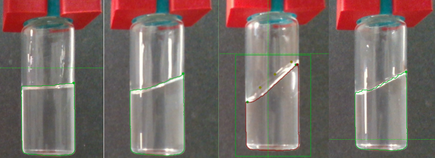
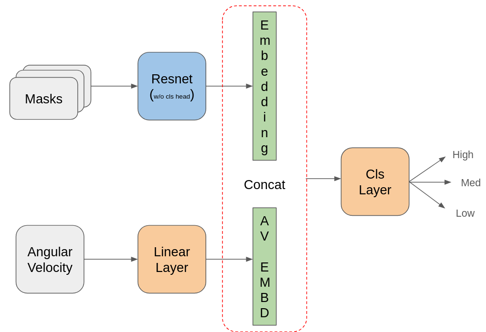

Automated Rheology Analysis via AI: Fluid Segmentation and Viscosity Estimation
Introduction
Understanding fluid rheology is critical for diverse applications, ranging from chemical manufacturing to biomedical research. Traditional rheological analysis methods are often labor-intensive, requiring sophisticated instruments and expert knowledge. This project aims to simplify and automate the identification of fluid rheology parameters, such as viscosity, using artificial intelligence (AI). By combining advances in computer vision and machine learning, this work seeks to provide chemists with a practical and efficient tool for analyzing liquid properties in a variety of settings.
Objective
- Liquid Segmentation: Accurately identifying and segmenting liquid menisci in video sequences.
- Viscosity Estimation: Predicting absolute viscosity values from segmented mask sequences and motion data, such as angular velocity.
Methodology
- Data Generation and Annotation: Creating and annotating video datasets to simulate diverse experimental setups.
- Segmentation Pipeline: Fine-tuning SAM 2.1 with advanced augmentations to ensure robust segmentation performance.
- Viscosity Prediction: Designing a regressor using ResNet18 and LSTM layers for temporal modeling, optimized with a mixed loss function.
Results
- Liquid Segmentation: Achieved 100% accuracy in fluid classification, consistently capturing subtle meniscus details.
- Viscosity Estimation: Initial experiments show promising results with normalized viscosity predictions, supported by advanced augmentation and preprocessing techniques.
Visuals


Figure 1: Fluid mask annotations generated using Segment Anything Model.
Figure 2: Visualization of rotating vial for viscosity estimation.

Figure 3: Fluid Viscosity classification pipeline.
Contribution
My contributions include:
- Designing and implementing the liquid segmentation pipeline by fine-tuning SAM 2.1 with human-prompted annotations.
- Generating, annotating, and preprocessing video datasets from scratch.
- Developing the viscosity estimation model using sequence modeling and advanced loss functions.
- Conducting extensive experiments with augmentations and normalization techniques.
- Reporting and visualizing segmentation masks, viscosity predictions, and performance metrics to validate the pipeline.